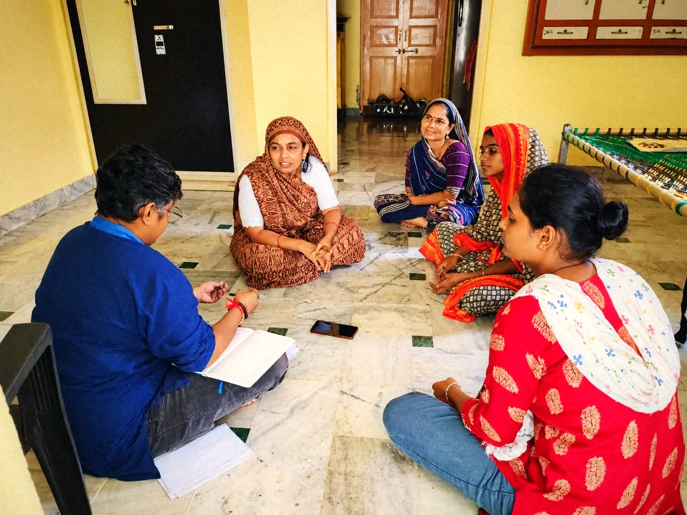

Most CSR reporting stops at outputs: how many people attended a training, how many centres got built. That's useful for tracking delivery. It says little about what actually changed in someone's life.
Flipkart's program is a useful example of how our framework closes that gap, because it runs five interventions at once, and every one of them is tied to a specific outcome in a person’s life.
- Financial and digital literacy training wasn't tracked as "training completed." We tracked whether people opened a dedicated, goal-based savings account afterward, because that behaviour is what proves the training changed how someone actually manages money.
- Skilling for employment, delivered through spoken tutorials in multiple languages, was tracked through job placement and income change after the course, not attendance.
- Healthcare and menstrual hygiene interventions, including sanitary napkin kiosks and affordable diagnostics, were tracked against awareness and actual use of services, since access to a service and a change in health behaviour are two different things.
- Entrepreneurship training was tracked against the specific skills and mindsets micro-entrepreneurs could demonstrate afterward.
- Early childhood education, delivered through Anganwadi Bal Vidyalayas, was tracked against something most programs miss entirely: whether it freed up a mother's time to work.
That's what person-first measurement means in practice. It starts from whether the person receiving a service is measurably better off, and picks the indicator that actually proves it, rather than the one that's easiest to count.
It's also continuous. Each of these chains gets revisited at baseline, midline, and endline, on the same people, so we can see whether early gains hold, fade, or compound over the life of the program. A number that looks strong at midline and drops by endline tells a very different story than one that keeps climbing, and only continuous tracking catches that difference.